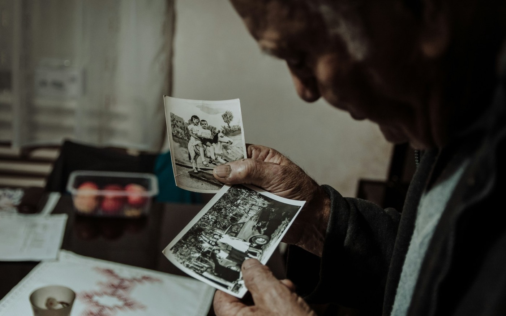
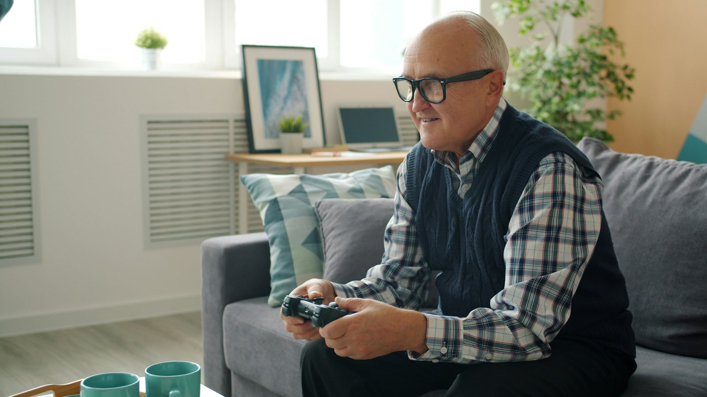
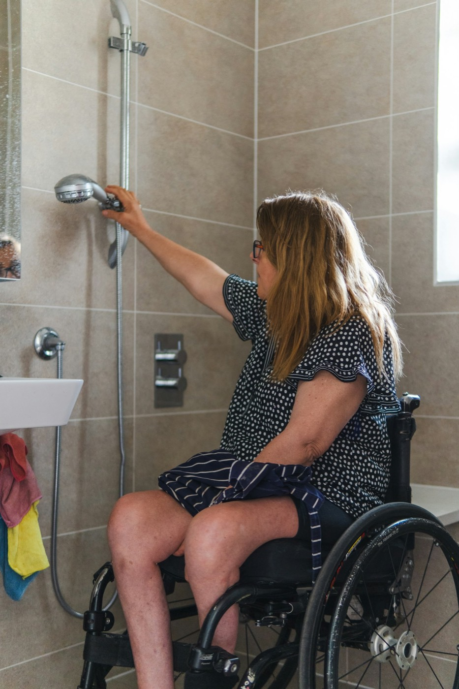
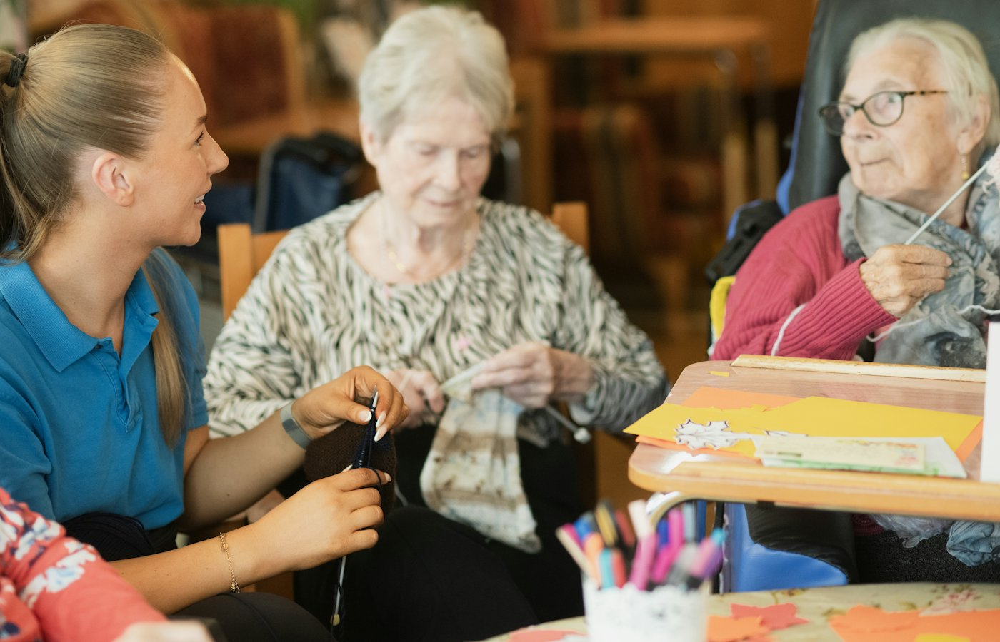

A caregiver laughing with an older woman in a lounge
A caregiver laughing with an older woman in a loungeWho it is for
For families living with dementia at home.
Your mom or dad has a diagnosis, or you are seeing the signs: repeated questions, missed meals, confusion in the late afternoon, getting lost on a familiar walk.
You want them to stay at home, safely, with people who understand dementia and treat them as the person they have always been.
Life Story profile
Before the first visit, we learn who they are.
Career, music, pets, favourite foods, routines and the things that upset them. Your caregiver sees it on every visit.
Sample Life Story profile · demo
Walter, 82, "Walt"
- Career
- Shipyard welder for 38 years. Proud of it. Loves talking about boats.
- Music
- Frank Sinatra, Glenn Miller. Big band calms him in the afternoon.
- Pets
- Had a beagle called Rex. Ask about Rex when he is unsettled.
- Favourite foods
- Pancakes, tomato soup, root beer floats. Dislikes fish.
- Daily routine
- Up at 6:30. Coffee before anything else. Newspaper on the porch.
- Things that upset him
- Being rushed. Loud TV. Being told his wife has died; say she is 'out'.
- What calms him
- Holding a warm mug. Sorting nuts and bolts in a tin. Hand on shoulder.

Your caregiver reads it before every visit in the app. When Walt asks for Rex, they do not correct him: they ask him to tell them about Rex. That is what knowing who someone is looks like in practice.
Stage guide
What care looks like at each stage.
Drag the slider. Honest guidance on when to add hours.
Early stage
They are mostly independent but miss appointments, repeat questions and lose track of bills or medicines.
- Companion visits 2 to 3 times a week
- Help with appointments, shopping and medication reminders
- Start the Life Story profile while they can tell it themselves
- Family coaching session
Typical starting hours8 to 15 hours a week

Middle stage
Daily routines get harder. Confusion in the late afternoon, wandering, missed meals and trouble with bathing are common.
- Daily visits with the same 2 to 3 caregivers
- Personal care with dignity
- Sundowning plan and a home safety walk-through
- Door sensors and an emergency contact ladder
Typical starting hours20 to 50 hours a week

Late stage
They need help with almost everything, may speak little, and comfort, touch and familiar music matter most.
- Long shifts or 24/7 care with a team
- Transfers, skin care and comfort
- Close work with nurses, hospice or palliative teams
- Respite for the family carer
Typical starting hours50 hours a week to 24/7
Every person is different and stages overlap. This is general guidance, not a medical assessment. Talk to their doctor about diagnosis and treatment.
Matched on temperament, not only on availability.
A quiet retired engineer and a chatty caregiver who loves gardening may not be the right fit. We match on personality, interests and language, then check in after the first two weeks.
Safety plan
A plan for the worries that keep you up at night.
- Home safety walkTrip hazards, lighting, the bathroom, stove and medicine storage, with a written list.
- Wandering planDoor sensors through partner products if you want them, a recent photo on file, a list of places they used to go.
- Emergency ladderWho we call first, second and third, and what each person is asked to do.
- Review monthlyThe care manager updates the plan as things change.
 An older woman reaching for a light switch at home
An older woman reaching for a light switch at homePartner sensors, if you want them
Door sensors, fall-detection pendants and smart plugs can alert the care team and family. They are optional, from partner companies, and set up with your consent.
- Door opened at night: alert to the on-call care manager
- No movement by 9am: a check-in call
- Emergency button: alerts the family circle
Sundowning plan








A calmer late afternoon, built with the family.
Many people with dementia become restless or frightened as daylight fades. We plan for it rather than react to it.
- Coffee and the paper, the way it has always been
- Walk while energy is highest
- Lunch, finger foods if needed
- Lights up, TV off, big band on
- A familiar task: folding, sorting, watering
- Early supper, calm voices
- Wind-down, same order every night
Family coaching
A free session for relatives.
 An older couple video calling family on a laptop
An older couple video calling family on a laptopOne hour, at home or by video, for anyone in the family. What to say when they ask for someone who has died. How to stop arguing about facts. How to share care between siblings without resentment. How to look after yourself.
- Calming phrases that work
- What to stop saying
- Making visits easier
- Planning the next six months
Included free with every dementia care plan.
What is included
Everything a good dementia caregiver does.
Personal care
Bathing, dressing, toileting and continence care with dignity and patience.
Meals and fluids
Cooking their favourites, finger foods, drinks offered on a schedule and recorded.
Routine and activity
Music, memory boxes, photos, walks, gardening and simple tasks with purpose.
Medication reminders
Reminders and a record in the app, within the scope we are allowed.
Appointments
Getting ready, getting there, and notes for the family afterwards.
Light housework
Laundry, dishes and tidy spaces that are safe to move around.
How we are different
Not a general agency with a dementia page.
Life Story on every visit
Not a form in a drawer: it is in the app, read before each visit.
Family coaching included
Because the family lives with dementia too.
Dementia-trained, every one
Every caregiver finishes our dementia training before their first visit, not 'when they get to it'.
The same small team
Two or three caregivers who know them, and a backup you meet before day one.
You can see it happen
The family app shows check-ins, care notes and a weekly summary.
Promises with numbers
Start times, replacement times and call-back times we measure and publish.


Price
From USD $38/hour
Dementia care is our specialist rate because every caregiver is trained for it and works in a small, stable team. Twenty hours a week is about USD $3,293 a month.
Your exact price is confirmed in writing after the free assessment. No sign-up fee, no long contract.
Questions
Five questions families ask about dementia care.
What stage of dementia do you care for?
All stages, from early memory loss to late stage. The plan and hours change as needs change, and the same team stays with you.
How are your caregivers trained in dementia?
Every caregiver completes our dementia training before their first visit: calming communication, sundowning, wandering safety, personal care with dignity, meals and hydration, then monthly refreshers.
What if they refuse help?
It is common. We start slowly, often as a 'friend' or 'helper' rather than a carer, lead with things they enjoy and build trust over several visits. Read our guide on when a parent refuses help.
Can you help with sundowning?
Yes. We build a late-afternoon routine with the family: light, sound, a snack, a familiar task and fewer demands. It is written into the care plan.
Do you give medicines?
We give reminders and record that they were taken, within what our license allows. Administering medicines is done by nurses or as their doctor directs.
No question matches. Call us and ask a person.
What this does not cover
- Diagnosis, treatment or medical advice; that is for their doctor or specialist
- Locked-door or restraint-based care; we never restrain anyone
- Clinical nursing tasks such as injections or wound dressings
- A guarantee of any health outcome; good care supports wellbeing but cannot stop dementia progressing
Book a free assessment Call (813) 555-0142

Care is a hundred small, good things.
A hand held. A story remembered. A routine that fits them.




Next step
You do not have to work this out alone.
Call (813) 555-0142 and a care advisor will listen first, then tell you plainly what we would do and what it would cost.